锦标赛：拼词、收集蝴蝶与赛季领奖

玩家进入独立拼词关卡收集蝴蝶，关卡结算展示本局收集反馈，阶段奖励为继续挑战提供目标。赛季结束后，领奖台集中展示获胜者，排名奖励与荣誉兑换仍可查看。
查看配图（可缩放）在页面内阅读锦标赛：拼词、收集蝴蝶与赛季领奖大图
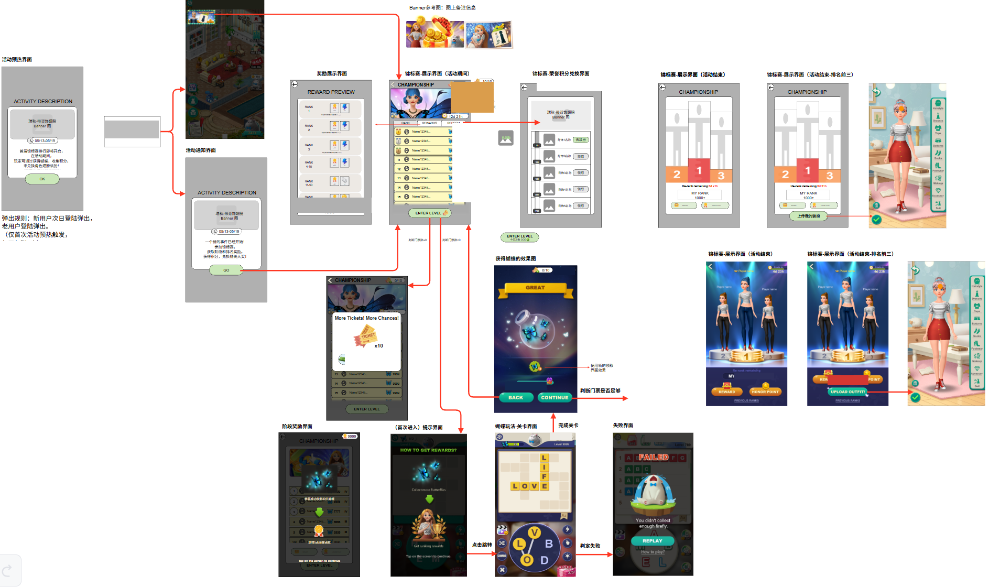
AUTHORED DESIGN / 策划资料摘要
锦标赛、分支剧情、活动与投骰子的设计交付。
DESIGN TO DELIVERY / Wordvillas
把拼词做成可反复挑战的赛季活动，把角色故事做成可按章节游玩和重玩的体验。我负责系统与交互设计，并跟进开发测试至上线。
资料来自 Moqups 历史设计稿，展示界面原型与团队美术。配图保留界面布局与交互旁注，最终界面以发布版本为准。
玩家进入独立拼词关卡收集蝴蝶，关卡结算展示本局收集反馈，阶段奖励为继续挑战提供目标。赛季结束后，领奖台集中展示获胜者，排名奖励与荣誉兑换仍可查看。
查看配图（可缩放）
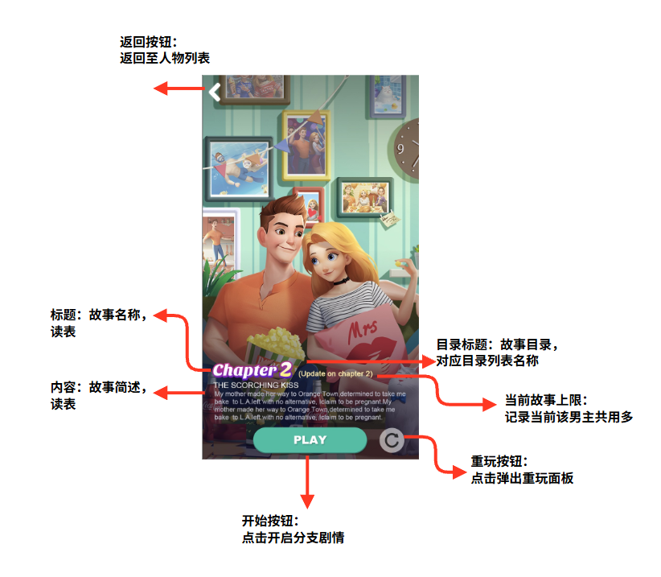
角色目录汇总各条故事线。玩家在详情页查看章节与简介，选择开始或重玩，进入场景后通过对白选项推进故事。章节锁定、待更新和可重玩各有明确的状态。
查看配图（可缩放）
开启前用选择面板确认参与，开启后把倒计时、阶段目标和进入关卡的按钮放在同一个面板。
查看配图（可缩放）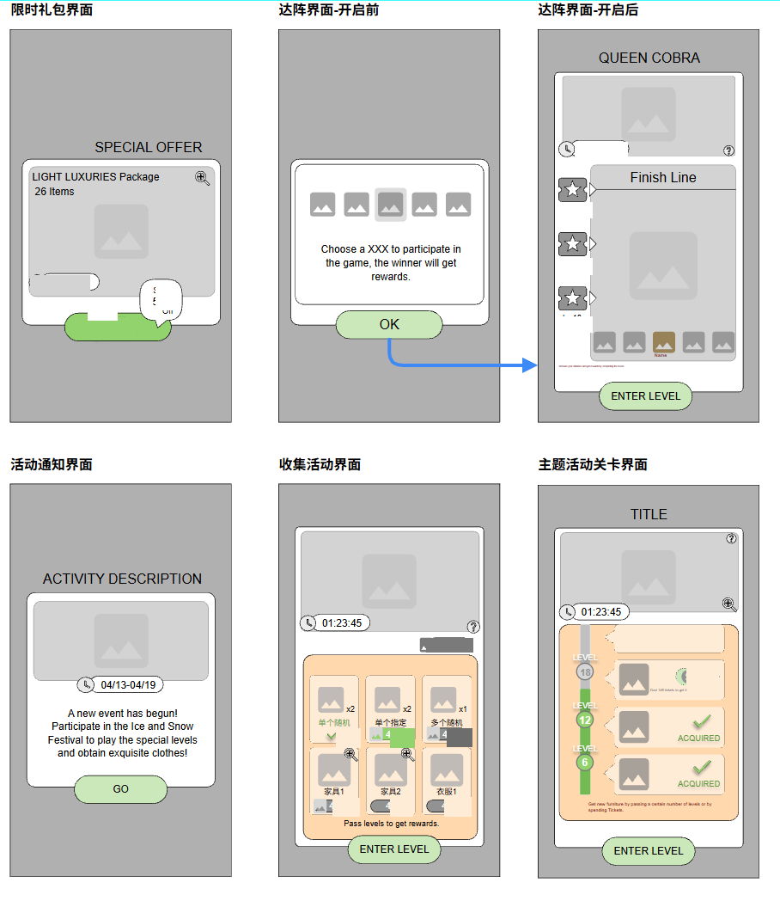
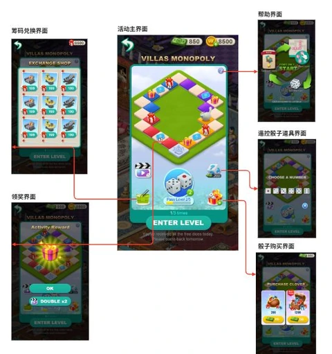
围绕棋盘推进组织投骰子、兑换、奖励和道具入口，使活动主界面、规则说明及操作反馈形成闭环；原图保留旧版示例，不作为当前经济配置。
查看配图（可缩放）AUTHORED DESIGN / 贝塔科技 · Wordvillas
重点展示锦标赛如何组织反复挑战与赛季结算，以及分支剧情如何处理选章、重玩和后续更新。我的任职角色为高级系统策划，任期 2020.03—2021.02。
三份文档均明确写有“文档撰写人：吴天昊”。本人确认相关功能已从设计推进到上线；下方保留历史规则与迭代，不代表每个方案细节均为最终版本。美术执行属于团队相关岗位，设计目标与示例排名、奖励、价格均不是实际业绩。
资料按 Wordvillas 的任务标题、角色与场景参考接入该项目，不将同公司其他项目自动视为这些文档的成果。完整内部文档、剧本、埋点数据、奖励表与经济配置不公开。
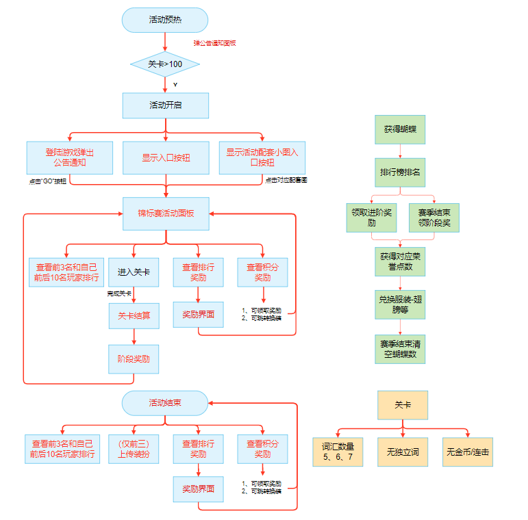
如何让主线进度不同的玩家参与独立竞技，并让活动结束后的奖励和展示仍然可用？
《锦标赛-排行榜系统文档》记录活动规则、关卡与结算交互。修订加入阶段进度条和结算后的继续挑战入口，门票规则随版本迭代。
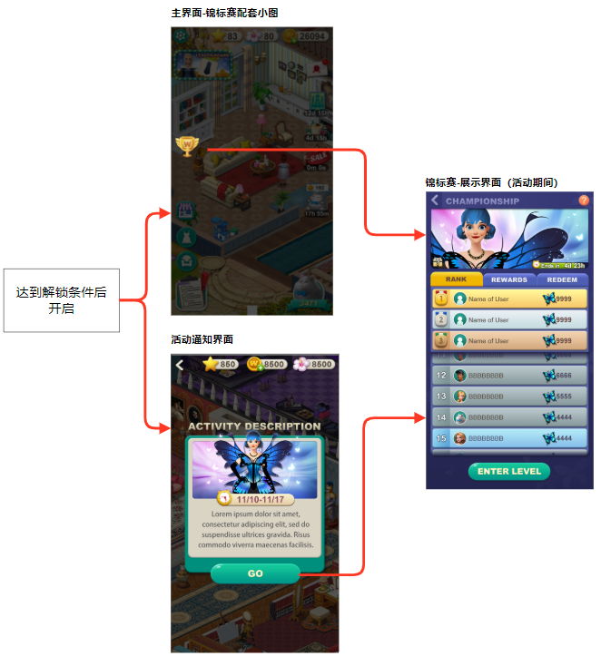
预热通知、主界面小入口与活动主面板，如何把玩家带到同一参与路径？
活动开启 UE 图将解锁条件、通知弹窗与展示面板连接，可用于策划、程序和 UI 对齐页面跳转；示例头像与名次不是真实用户排行数据。

怎样把分散的角色故事集中展示，并区分可游玩、尚未解锁与等待更新？
《分支剧情系统文档》整理了入口、锁定及重玩交互。《分支剧情界面优化》补充了后续章节可用时的承接方式与切换页签。
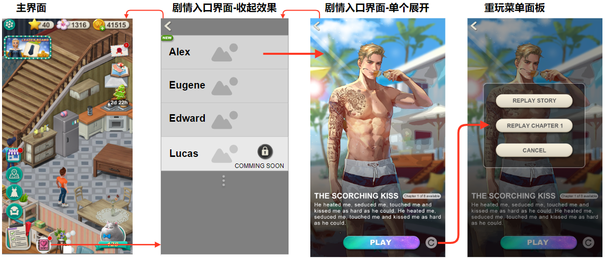
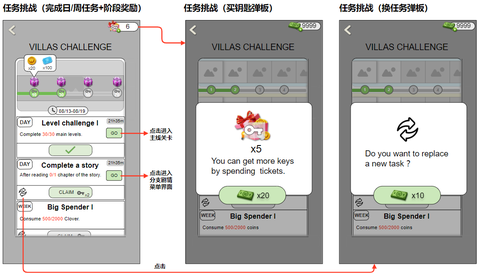
如何让每日和周任务共同推进活动目标，并让操作后的状态与返回路径清晰？
文档将任务库、排序、奖励状态、跳转恢复、换任务弹板、资源条与埋点需求一起交付；UI 参考与最终配置在正文中明确区分。
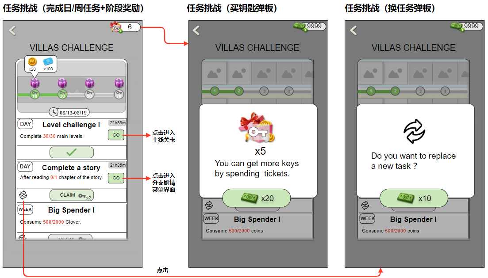
ART BRIEF / 界面资源参考
《2020-03活动美术需求》按活动列出标题、角色、背景、UI 主题与配套入口图。下面两张是需求文件内的已有界面参考，不是对应新主题的最终成品，也不认定该美术需求文件由本人独立撰写。
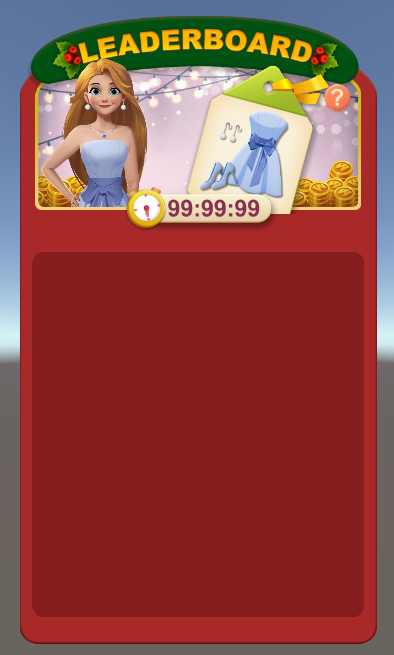
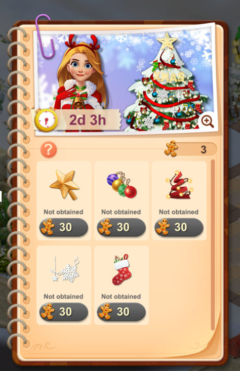
排行活动需要标题、倒计时、角色与奖励展示和排行内容区；收集兑换需要部件列表、未获得状态与消耗入口。需求同时覆盖入口小图和活动通知，减少只交付主面板而遗漏入口的情况。
署名策划案用于说明我的规则和交互文档贡献；这些图用于说明团队美术配合与需求表达。已有参考的题材不等于新活动最终上线题材，不使用未经核实的第三方主题素材作个人成果。